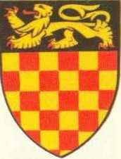

Antavla
49224469307 Queen Ealhswith
Drottning.

Far:
Ætelred Mucel
Barn med
49224469306 King Alfred The Great (849 - 899)
Barn:
Elfrida of Wessex (877? - 929)
Personhistoria
Årtal
Ålder
Händelse
849
Partnern
49224469306 King Alfred The Great
föds 849 Wantage, Berkshire, England
[1]
877?
Dottern
24612234653 Countesse Elfrida of Wessex
föds omkring 877 England
[1]
890
Barnbarnet
12306117326 Geoffroy II de Gatinais
föds 890
[2]
896?
Barnbarnet
24612236720 Count Arnulf I of Flanders
föds omkring 896
[1]
899
Partnern
49224469306 King Alfred The Great
dör 899-10-26
[1]
929
Dottern
24612234653 Countesse Elfrida of Wessex
dör 929-06-07
[1]
942
Barnbarnet
12306117326 Geoffroy II de Gatinais
dör 942
[2]
964
Barnbarnet
24612236720 Count Arnulf I of Flanders
dör 964-03-27 Gent, Belgien
[1]
Källor
[1]
Wikipedia
[2]
Henri Pichot